Introduction aux statistiques spatiales
Types d’analyses spatiales
Dans le cadre de cette formation, nous discuterons de trois types d’analyses spatiales: l’analyse des patrons de points, les modèles géostatistiques et les modèles de données aréales.
Dans l’analyse des patrons de points, nous avons des données ponctuelles représentant la position d’individus ou d’événements dans une région d’étude et nous supposons que tous les individus ou événements ont été recensés dans cette région. Cette analyse s’intéresse à la distribution des positions des points eux-mêmes. Voici quelques questions typiques de l’analyse des patrons de points:
Les points sont-ils disposés aléatoirement ou agglomérés?
Deux types de points sont-ils disposés indépendamment?
Les modèles géostatistiques visent à représenter la distribution spatiale de variables continues qui sont mesurés à certains points d’échantillonnage. Ils supposent que les mesures de ces variables à différents points sont corrélées en fonction de la distance entre ces points. Parmi les applications des modèles géostatistiques, notons le lissage des données spatiales (ex.: produire une carte d’une variable sur l’ensemble d’une région en fonction des mesures ponctuelles) et la prédiction de ces variables pour des points non-échantillonnés.
Les données aréales sont des mesures prises non pas à des points, mais pour des régions de l’espace représentées par des polygones (ex.: divisions du territoire, cellules d’une grille). Les modèles représentant ces types de données définissent un réseau de voisinage reliant les régions et incluent une corrélation spatiale entre régions voisines.
Stationnarité et isotropie
Plusieurs analyses spatiales supposent que les variables sont stationnaires dans l’espace. Comme pour la stationnarité dans le domaine temporel, cette propriété signifie que les statistiques sommaires (moyenne, variance et corrélations entre mesures d’une variable) ne varient pas avec une translation dans l’espace. Par exemple, la corrélation spatiale entre deux points peut dépendre de la distance les séparant, mais pas de leur position absolue.
En particulier, il ne peut pas y avoir de tendance à grande échelle (souvent appelée gradient dans un contexte spatial), ou bien cette tendance doit être prise en compte afin de modéliser la corrélation spatiale des résidus.
Dans le cas de l’analyse des patrons de points, la stationnarité (aussi appelée homogénéité dans ce contexte) signifie que la densité des points ne suit pas de tendance à grande échelle.
Dans un modèle statistique isotropique, les corrélations spatiales entre les mesures à deux points dépendent seulement de la distance entre ces points, pas de la direction. Dans ce cas, les statistiques sommaires ne varient pas si on effectue une rotation dans l’espace.
Données géoréférencées
Les études environnementales utilisent de plus en plus de données provenant de sources de données géospatiales, c’est-à-dire des variables mesurées sur une grande partie du globe (ex.: climat, télédétection). Le traitement de ces données requiert des concepts liés aux systèmes d’information géographique (SIG), qui ne sont pas couverts dans cet atelier, alors que nous nous concentrons sur les aspects statistiques de données variant dans l’espace.
L’utilisation de données géospatiales ne signifie pas nécessairement qu’il faut avoir recours à des statistiques spatiales. Par exemple, il est courant d’extraire les valeurs de ces variables géographiques à des points d’étude pour expliquer une réponse biologique observée sur le terrain. Dans ce cas, l’utilisation de statistiques spatiales est seulement nécessaire en présence d’une corrélation spatiale dans les résidus, après avoir tenu compte de l’effet des prédicteurs.
Analyse des patrons de points
Patron de points et processus ponctuel
Un patron de points (point pattern) décrit la position spatiale (le plus souvent en 2D) d’individus ou d’événements, représentés par des points, dans une aire d’étude donnée, souvent appelée la fenêtre d’observation.
On suppose que chaque point a une étendue spatiale négligeable par rapport aux distances entre les points. Des méthodes plus complexes existent pour traiter des patrons spatiaux d’objets qui ont une largeur non-néligeable, mais ce sujet dépasse la portée de cet atelier.
Un processus ponctuel (point process) est un modèle statistique qui peut être utilisé pour simuler des patrons de points ou expliquer un patron de points observé.
Structure spatiale totalement aléatoire
Une structure spatiale totalement aléatoire (complete spatial randomness) est un des patrons les plus simples, qui sert de modèle nul pour évaluer les caractéristiques de patrons de points réels. Dans ce patron, la présence d’un point à une position donnée est indépendante de la présence de points dans un voisinage.
Le processus créant ce patron est un processus de Poisson homogène. Selon ce modèle, le nombre de points dans toute région de superficie \(A\) suit une distribution de Poisson: \(N(A) \sim \text{Pois}(\lambda A)\), où \(\lambda\) est l’intensité du processus (i.e. la densité de points). \(N\) est indépendant entre deux régions disjointes, peu importe comment ces régions sont définies.
Dans le graphique ci-dessous, seul le patron à droite est totalement aléatoire. Le patron à gauche montre une agrégation des points (probabilité plus grande d’observer un point si on est à proximité d’un autre point), tandis que le patron du centre montre une répulsion (faible probabilité d’observer un point très près d’un autre).
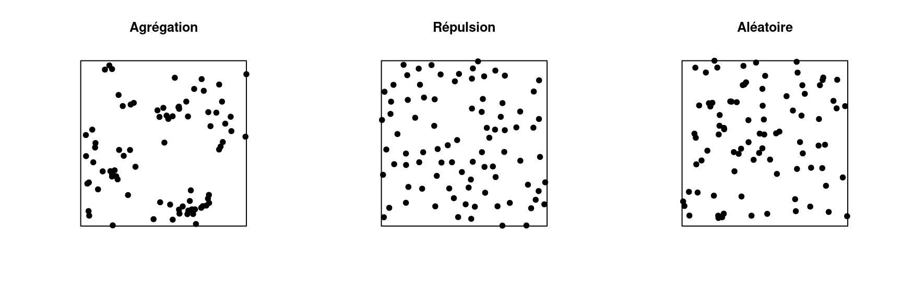
Analyse exploratoire ou inférentielle pour un patron de points
Plusieurs statistiques sommaires sont utilisées pour décrire les caractéristiques un patron de points. La plus simple est l’intensité \(\lambda\), qui comme mentionné plus haut représente la densité de points par unité de surface. Si le patron de points est hétérogène, l’intensité n’est pas constante, mais dépend de la position: \(\lambda(x, y)\).
Par rapport à l’intensité qui est une statistique dite de premier ordre, les statistiques de second ordre décrivent comment la probabilité de présence d’un point dans une région dépend de la présence d’autres points. L’indice \(K\) de Ripley présenté dans la prochaine section est un exemple de statistique sommaire de second ordre.
Les inférences statistiques réalisées sur des patrons de points consistent habituellement à tester l’hypothèse que le patron de points correspond à un modèle nul donné, par exemple une structure spatiale totalement aléatoire, ou un modèle nul plus complexe. Même pour les modèles nuls les plus simples, nous connaissons rarement la distribution théorique pour une statistique sommaire du patron de points sous le modèle nul. Les tests d’hypothèses sur les patrons de points sont donc réalisés par simulation: on simule un grand nombre de patrons de points à partir du modèle nul et on compare la distribution des statistiques sommaires qui nous intéressent pour ces simulations à la valeur des statistiques pour le patron de points observé.
Indice \(K\) de Ripley
L’indice de Ripley \(K(r)\) est défini comme le nombre moyen de points se trouvant dans un cercle de rayon \(r\) donné autour d’un point du patron, normalisé par l’intensité \(\lambda\).
Pour un patron totalement aléatoire, le nombre moyen de points dans un cercle de rayon \(r\) est \(\lambda \pi r^2\), donc en théorie \(K(r) = \pi r^2\) pour ce modèle nul. Une valeur de \(K(r)\) supérieure signifie qu’il y a agrégation des points à l’échelle \(r\), tandis qu’une valeur inférieure signifie qu’il y a une répulsion.
En pratique, \(K(r)\) est estimé pour un patron de points donné par l’équation:
\[ K(r) = \frac{A}{n(n-1)} \sum_i \sum_{j > i} I \left( d_{ij} \le r \right) w_{ij}\]
où \(A\) est l’aire de la fenêtre d’observation et \(n\) est le nombre de points du patron, donc \(n(n-1)\) est le nombre de paires de points distinctes. On fait la somme pour toutes les paires de points de la fonction indicatrice \(I\), qui prend une valeur de 1 si la distance entre les points \(i\) et \(j\) est inférieure ou égale à \(r\). Finalement, le terme \(w_{ij}\) permet de donner un poids supplémentaire à certaines paires de points pour tenir compte des effets de bordure, tel que discuté dans la section suivante.
Par exemple, les graphiques ci-dessous présentent la fonction estimée \(K(r)\) pour les patrons illustrés ci-dessus, pour des valeurs de \(r\) allant jusqu’à 1/4 de la largeur de la fenêtre. La courbe pointillée rouge indique la valeur théorique pour une structure spatiale totalement aléatoire et la zone grise est une “enveloppe” produite par 99 simulations de ce modèle nul. Le patron agrégé montre un excès de voisins jusqu’à \(r = 0.25\) et le patron avec répulsion montre un déficit significatif de voisins pour les petites valeurs de \(r\).
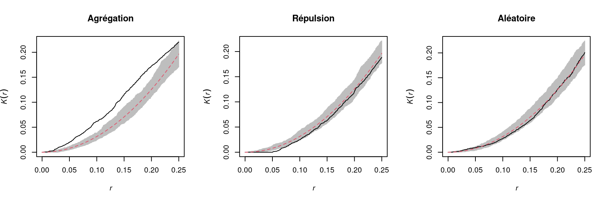
Outre le \(K\), il existe d’autres statistiques pour décrire les propriétés de second ordre du patron, par exemple la distance moyenne entre un point et ses \(N\) plus proches voisins. Vous pouvez consulter le manuel de Wiegand et Moloney (2013) suggéré en référence pour en apprendre plus sur différentes statistiques sommaires des patrons de points.
Effets de bordure
Dans le contexte de l’analyse de patrons de points, l’effet de bordure (“edge effect”) est dû au fait que nous avons une connaissance incomplète du voisinage des points près du bord de la fenêtre d’observation, ce qui peut induire un biais dans le calcul des statistiques comme le \(K\) de Ripley.
Différentes méthodes ont été développées pour corriger le biais dû aux effets de bordure. Selon la méthode de Ripley, la contribution d’un voisin \(j\) situé à une distance \(r\) d’un point \(i\) reçoit un poids \(w_{ij} = 1/\phi_i(r)\), où \(\phi_i(r)\) est la fraction du cercle de rayon \(r\) autour de \(i\) contenu dans la fenêtre d’observation. Par exemple, si 2/3 du cercle se trouve dans la fenêtre, ce voisin compte pour 3/2 voisins dans le calcul d’une statistique comme \(K\).

La méthode de Ripley est une des plus simples pour corriger les effets de bordure, mais n’est pas nécessairement la plus efficace; notamment, les poids plus grands donnés à certaines paires de points tend à accroître la variance du calcul de la statistique. D’autres méthodes de correction sont présentées dans les manuels spécialisés, comme celui de Wiegand et Moloney (2013) en référence.
Exemple
Pour cet exemple, nous utilisons le jeu de données semis_xy.csv, qui représente les coordonnées \((x, y)\) de semis de deux espèces (sp, B = bouleau et P = peuplier) dans une placette de 15 x 15 m.
x y sp
1 14.73 0.05 P
2 14.72 1.71 P
3 14.31 2.06 P
4 14.16 2.64 P
5 14.12 4.15 B
6 9.88 4.08 BLe package spatstat permet d’effectuer des analyses de patrons de point dans R. La première étape consiste à transformer notre tableau de données en objet ppp (patron de points) avec la fonction du même nom. Dans cette fonction, nous spécifions quelles colonnes contiennent les coordonnées x et y ainsi que les marques (marks), qui seront ici les codes d’espèce. Il faut aussi spécifier une fenêtre d’observation (window) à l’aide de la fonction owin, à laquelle nous indiquons les limites de la placette en x et y.
library(spatstat)
semis <- ppp(x = semis$x, y = semis$y, marks = as.factor(semis$sp),
window = owin(xrange = c(0, 15), yrange = c(0, 15)))
semis
Marked planar point pattern: 281 points
Multitype, with levels = B, P
window: rectangle = [0, 15] x [0, 15] unitsLes marques peuvent être numériques ou catégorielles. Notez que pour des marques catégorielles comme c’est le cas ici, il faut convertir explicitement la variable en facteur.
La fonction plot appliquée à un patron de points montre un diagramme du patron.
plot(semis)
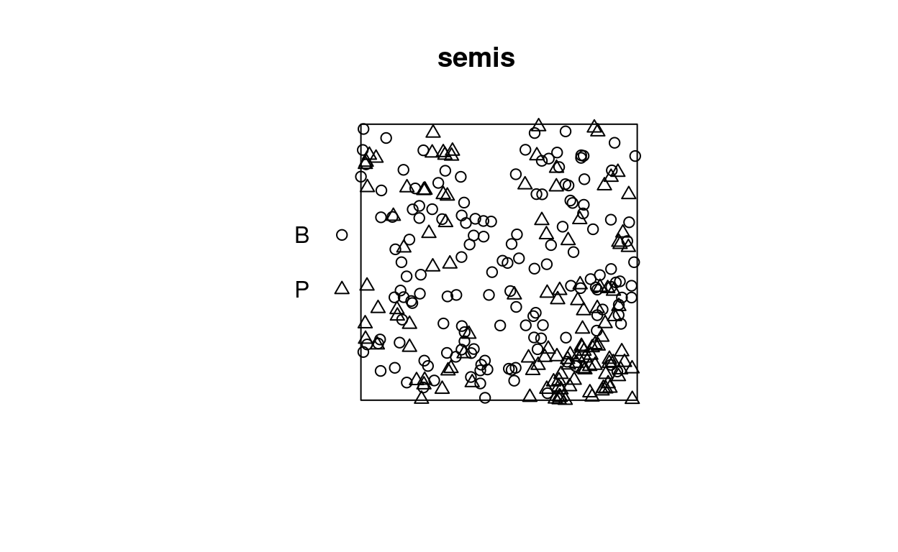
La fonction intensity calcule la densité des points de chaque espèce par unité de surface, ici en \(m^2\).
intensity(semis)
B P
0.6666667 0.5822222 Pour analyser d’abord séparément la distribution de chaque espèce, nous séparons le patron avec split. Puisque le patron contient des marques catégorielles, la séparation se fait automatiquement en fonction de la valeur des marques. Le résultat est une liste de deux patrons de points.
La fonction Kest calcule le \(K\) de Ripley pour une série de distances allant (par défaut) jusqu’à 1/4 de la largeur de la fenêtre. Ici, nous l’appliquons au premier patron (bouleau) en choisissant semis_split[[1]]. Notez que les doubles crochets sont nécessaires pour choisir un élément d’une liste dans R.
L’argument correction = "iso" indique d’appliquer la méthode de Ripley pour corriger les effets de bordure.
k <- Kest(semis_split[[1]], correction = "iso")
plot(k)
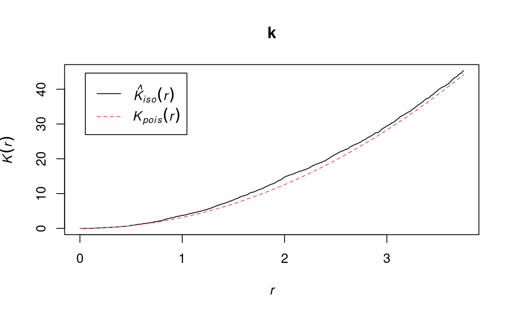
Selon ce graphique, il semble y avoir une excès de voisins à partir d’un rayon de 1 m. Pour vérifier s’il s’agit d’un écart significatif, nous produisons une enveloppe de simulation avec la fonction envelope. Le permier argument d’envelope est un patron de point auquel les simulations seront comparées, le deuxième une fonction à calculer (ici, Kest) pour chaque patron simulé, puis on y ajoute les arguments de la fonction Kest (ici, seulement correction).
plot(envelope(semis_split[[1]], Kest, correction = "iso"))
Generating 99 simulations of CSR ...
1, 2, 3, 4, 5, 6, 7, 8, 9, 10, 11, 12, 13, 14, 15, 16, 17, 18, 19, 20, 21, 22, 23, 24, 25, 26, 27, 28, 29, 30, 31, 32, 33, 34, 35,
36, 37, 38, 39, 40, 41, 42, 43, 44, 45, 46, 47, 48, 49, 50, 51, 52, 53, 54, 55, 56, 57, 58, 59, 60, 61, 62, 63, 64, 65, 66, 67, 68, 69, 70,
71, 72, 73, 74, 75, 76, 77, 78, 79, 80, 81, 82, 83, 84, 85, 86, 87, 88, 89, 90, 91, 92, 93, 94, 95, 96, 97, 98, 99.
Done.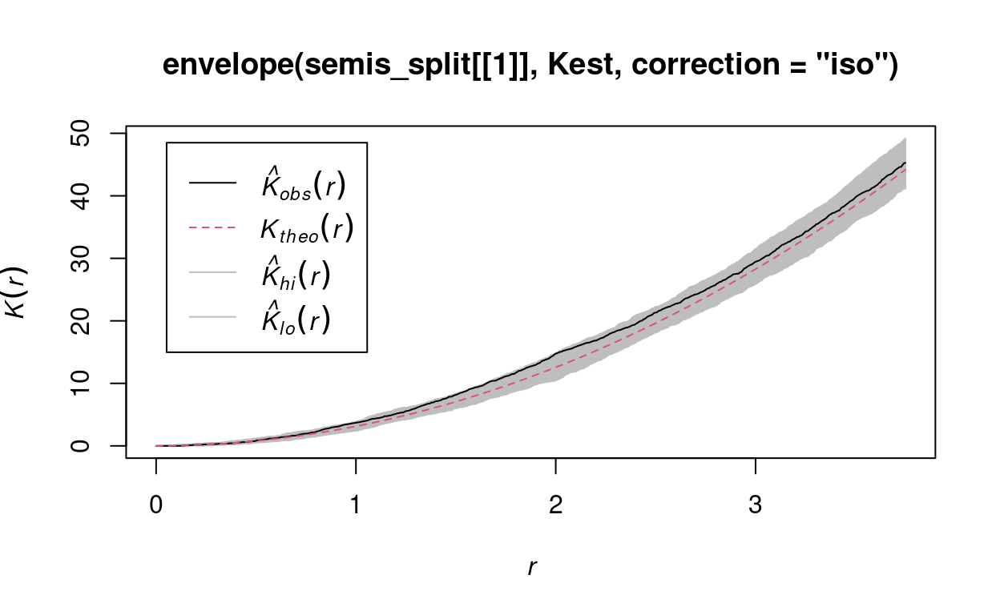
Tel qu’indiqué par le message, cette fonction effectue par défaut 99 simulations de l’hypothèse nulle correspondant à une structure spatiale totalement aléatoire (CSR, pour complete spatial randomness).
La courbe observée sort de l’enveloppe des 99 simulations près de \(r = 2\). Il faut être prudent de ne pas interpréter trop rapidement un résultat sortant de l’enveloppe. Même s’il y a environ une probabilité de 1% d’obtenir un résultat plus extrême selon l’hypothèse nulle à une distance donnée, l’enveloppe est calculée pour un grand nombre de valeurs de la distance et nous n’effectuons pas de correction pour les comparaisons multiples. Ainsi, un écart significatif pour une très petite plage de valeurs de \(r\) peut être simplement dû au hasard.
Exercice 1
En regardant le graphique du deuxième patron de points (semis de peuplier), pouvez-vous prédire où se situera le \(K\) de Ripley par rapport à l’hypothèse nulle d’une structure spatiale totalement aléatoire? Vérifiez votre prédiction en calculant le \(K\) de Ripley pour ce patron de points dans R.
Effet de l’hétérogénéité
Le graphique ci-dessous illustre un patron de points hétérogène, c’est-à-dire qu’il présente un gradient d’intensité (plus de points à gauche qu’à droite).
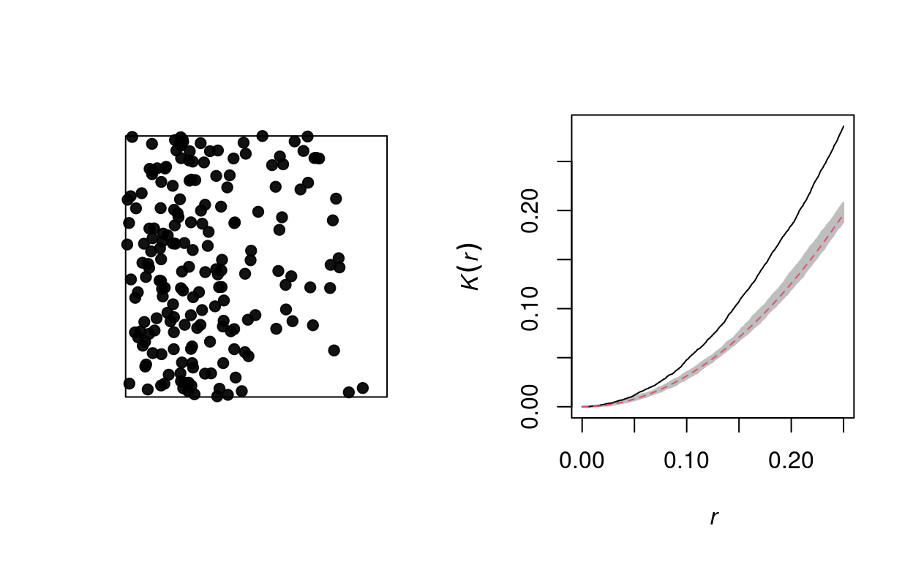
Un gradient de densité peut être confondu avec une agrégation des points, comme on peut voir sur le graphique du \(K\) de Ripley correspondant. En théorie, il s’agit de deux processus différents:
Hétérogénéité: La densité de points varie dans la région d’étude, par exemple dû au fait que certaines conditions locales sont plus propices à la présence de l’espèce étudiée.
Agrégation: La densité moyenne des points est homogène, mais la présence d’un point augmente la présence d’autre points dans son voisinage, par exemple en raison d’interactions positives entre les individus.
Cependant, il peut être difficile de différencier les deux en pratique, surtout que certains patrons peuvent être à la fois hétérogènes et agrégés.
Prenons l’exemple des semis de peuplier de l’exercice précédent. La fonction density appliquée à un patron de points effectue une estimation par noyau (kernel density estimation) de la densité des semis à travers la placette. Par défaut, cette fonction utilise un noyau gaussien avec un écart-type sigma spécifié dans la fonction, qui détermine l’échelle à laquelle les fluctuations de densité sont “lissées”. Ici, nous utilisons une valeur de 2 m pour sigma et nous représentons d’abord la densité estimée avec plot, avant d’y superposer les points (add = TRUE signifie que les points sont ajoutés au graphique existant plutôt que de créer un nouveau graphique).
Pour mesurer l’agrégation ou la répulsion des points d’un patron hétérogène, nous devons utilisé la version non-homogène de la statistique \(K\) (Kinhom dans spatstat). Cette statistique est toujours égale au nombre moyen de voisins dans un rayon \(r\) d’un point du patron, mais plutôt que de normaliser ce nombre par l’intensité globale du patron, il est normalisé par l’estimation locale de la densité de points. Comme ci-dessus, nous spécifions sigma = 2 pour contrôler le niveau de lissage de l’estimation de la densité variable.
plot(Kinhom(semis_split[[2]], sigma = 2, correction = "iso"))
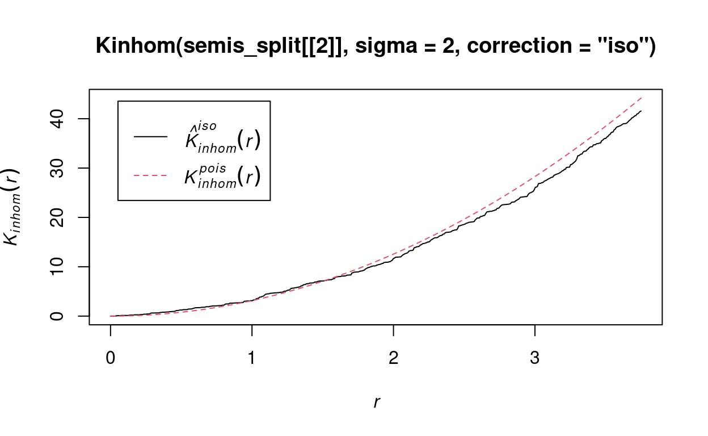
En tenant compte de l’hétérogénéité du patron à une échelle sigma de 2 m, il semble donc y avoir un déficit de voisins à partir d’environ 1.5 m des points du patron. Il reste à voir si cette déviation est significative.
Comme précédemment, nous utilisons envelope pour simuler la statistique Kinhom sous le modèle nul. Cependant, ici le modèle nul n’est pas un processus de Poisson homogène (structure spatiale totalement aléatoire). Il s’agit plutôt d’un processus de Poisson hétérogène simulé par la fonction rpoispp(dens_p), c’est-à-dire que les points sont indépendants les uns des autres, mais leur densité est hétérogène et donnée par dens_p. L’argument simulate de la fonction envelope permet de spécifier une fonction utilisée pour les simulations sous le modèle nul; cette fonction doit avoir un argument, ici x, même s’il n’est pas utilisé.
Finalement, en plus des arguments nécessaires pour Kinhom, soit sigma et correction, nous spécifions aussi nsim = 199 pour réaliser 199 simulations et nrank = 5 pour éliminer les 5 résultats les plus extrêmes de chaque côté de l’enveloppe, donc les 10 plus extrêmes sur 199, pour réaliser un intervalle contenant environ 95% de la probabilité sous l’hypothèse nulle.
khet_p <- envelope(semis_split[[2]], Kinhom, sigma = 2, correction = "iso",
nsim = 199, nrank = 5, simulate = function(x) rpoispp(dens_p))
Generating 199 simulations by evaluating function ...
1, 2, 3, 4.6.8.10.12.14.16.18.20.22.24.26.28.30.32.34.36
.38.40.42.44.46.48.50.52.54.56.58.60.62.64.66.68.70.72
.74.76.78.80.82.84.86.88.90.92.94.96.98.100.102.104.106.108
.110.112.114.116.118.120.122.124.126.128.130.132.134.136.138.140.142.144
.146.148.150.152.154.156.158.160.162.164.166.168.170.172.174.176.178.180
.182.184.186.188.190.192.194.196.198 199.
Done.plot(khet_p)
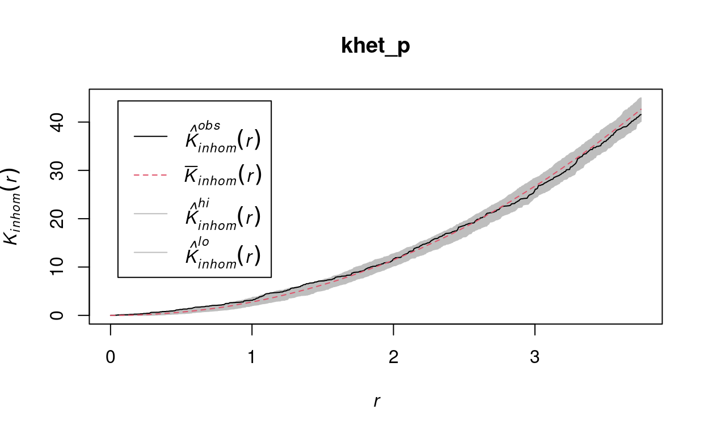
Note: Pour un test d’hypothèse basé sur des simulations d’une hypothèse nulle, la valeur \(p\) est estimée par \((m + 1)/(n + 1)\), où \(n\) est le nombre de simulations et \(m\) est le nombre de simulations où la valeur de la statistique est plus extrême que celle des données observées. C’est pour cette raison qu’on choisit un nombre de simulations comme 99, 199, etc.
Exercice 2
Répétez l’estimation de la densité hétérogène et le calcul de Kinhom avec un écart-type sigma de 5 plutôt que 2. Comment le niveau de lissage pour la densité influence-t-il les conclusions?
Pour différencier une variation de densité des points et d’une interaction (agrégation ou répulsion) entre ces points avec ce type d’analyse, il faut généralement supposer que les deux processus opèrent à différentes échelles. Typiquement, nous pouvons tester si les points sont agrégés à petite échelle après avoir tenu compte d’une variation de la densité à une échelle plus grande.
Relation entre deux patrons de points
Considérons un cas où nous avons deux patrons de points, par exemple la position des arbres de deux espèces dans une parcelle (points oranges et verts dans le graphique ci-dessous). Chacun des deux patrons peut présenter ou non des agrégations de points.
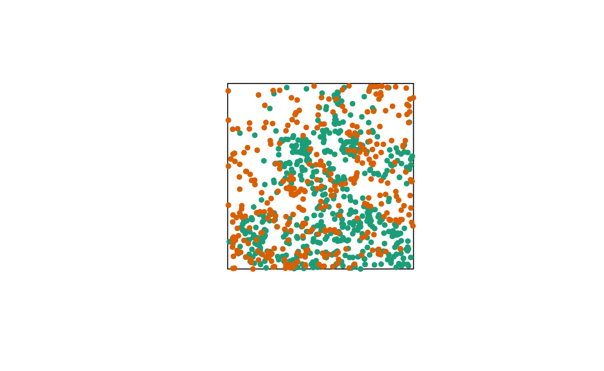
Sans égard à cette agrégation au niveau de l’espèce, nous voulons déterminer si les deux espèces sont disposées indépendamment. Autrement dit, la probabilité d’observer un arbre d’une espèce dépend-elle de la présence d’un arbre de l’autre espèce à une distance donnée?
La version bivariée du \(K\) de Ripley permet de répondre à cette question. Pour deux patrons désignés 1 et 2, l’indice \(K_{12}(r)\) calcule le nombre moyen de points du patron 2 dans un rayon \(r\) autour d’un point du patron 1, normalisé par la densité du patron 2.
En théorie, cet indice est symétrique, donc \(K_{12}(r) = K_{21}(r)\) et le résultat serait le même si on choisit les points du patron 1 ou 2 comme points “focaux” pour l’analyse. Cependant, l’estimation des deux quantités pour un patron observé peut différer, notamment en raison des effets de bord. La variabilité peut aussi être différente pour \(K_{12}\) et \(K_{21}\) entre les simulations d’un modèle nul, donc le test de l’hypothèse nulle peut avoir une puissance différente selon le choix de l’espèce focale.
Le choix d’un modèle nul approprié est important ici. Afin de déterminer s’il existe une attraction ou une répulsion significative entre les deux patrons, il faut déplacer aléatoirement la position d’un des patrons relative à celle de l’autre patron, tout en conservant la structure spatiale de chaque patron pris isolément.
Une des façons d’effectuer cette randomisation consiste à décaler l’un des deux patrons horizontalement et/ou verticalement d’une distance aléatoire. La partie du patron qui “sort” d’un côté de la fenêtre est rattachée de l’autre côté. Cette méthode s’appelle une translation toroïdale (toroidal shift), car en connectant le haut et le bas ainsi que la gauche et la droite d’une surface rectangulaire, on obtient la forme d’un tore (un “beigne” en trois dimensions).
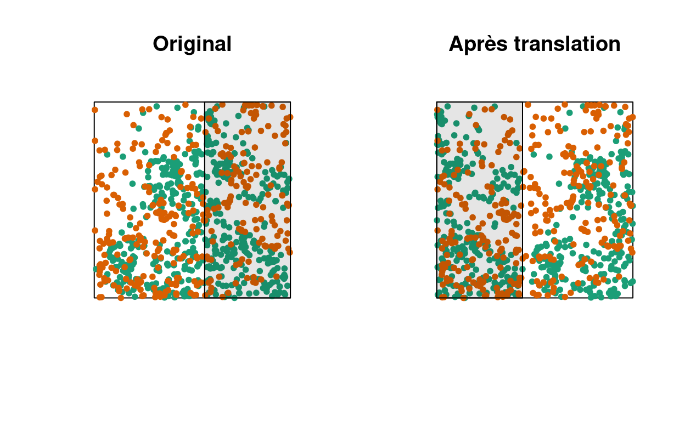
Le graphique ci-dessus illustre une translation du patron vert vers la droite, tandis que le patron orange reste au même endroit. Les points verts dans la zone ombragée sont ramenés de l’autre côté. Notez que si cette méthode préserve de façon générale la structure de chaque patron tout en randomisant leur position relative, elle peut comporter certains inconvénients, comme de diviser des amas de points qui se trouvent près du point de coupure.
Vérifions maintenant s’il y a une dépendance entre la position des deux espèces (bouleau et peuplier) dans notre placette. La fonction Kcross calcule l’indice bivarié \(K_{ij}\), il faut spécifier quel type de point est considéré comme l’espèce focale \(i\) et l’espèce voisine \(j\).
plot(Kcross(semis, i = "P", j = "B", correction = "iso"))
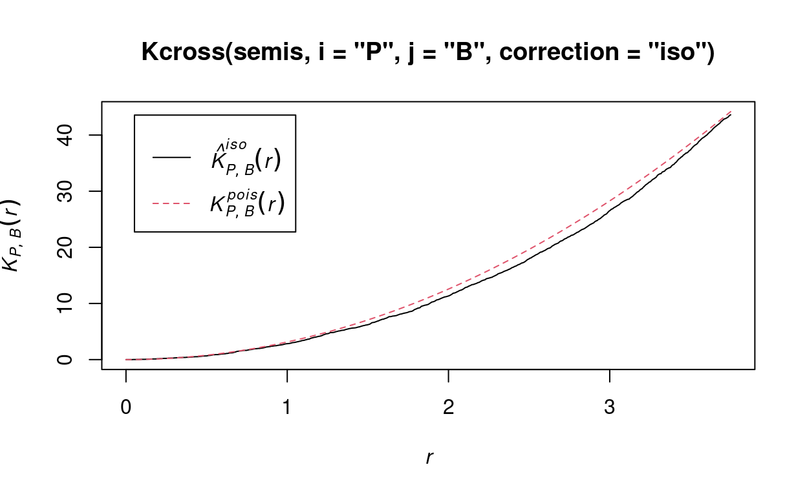
Ici, le \(K\) observé est inférieur à la valeur théorique, indiquant une répulsion possible des deux patrons.
Pour déterminer l’enveloppe du \(K\) selon l’hypothèse nulle d’indépendance des deux patrons, nous devons spécifier que les simulations doivent être basées sur une translation des patrons. Nous indiquons que les simulations doivent utiliser la fonction rshift (translation aléatoire) avec l’argument simulate = function(x) rshift(x, which = "B"); ici, l’argument x de simulate correspond au patron de points original et l’argument which indique quel type de points subit la translation. Comme pour le cas précédent, il faut répéter dans la fonction envelope les arguments nécessaires pour Kcross, soit i, j et correction.
plot(envelope(semis, Kcross, i = "P", j = "B", correction = "iso",
nsim = 199, nrank = 5, simulate = function(x) rshift(x, which = "B")))
Generating 199 simulations by evaluating function ...
1, 2, 3, 4.6.8.10.12.14.16.18.20.22.24.26.28.30.32.34.36
.38.40.42.44.46.48.50.52.54.56.58.60.62.64.66.68.70.72
.74.76.78.80.82.84.86.88.90.92.94.96.98.100.102.104.106.108
.110.112.114.116.118.120.122.124.126.128.130.132.134.136.138.140.142.144
.146.148.150.152.154.156.158.160.162.164.166.168.170.172.174.176.178.180
.182.184.186.188.190.192.194.196.198 199.
Done.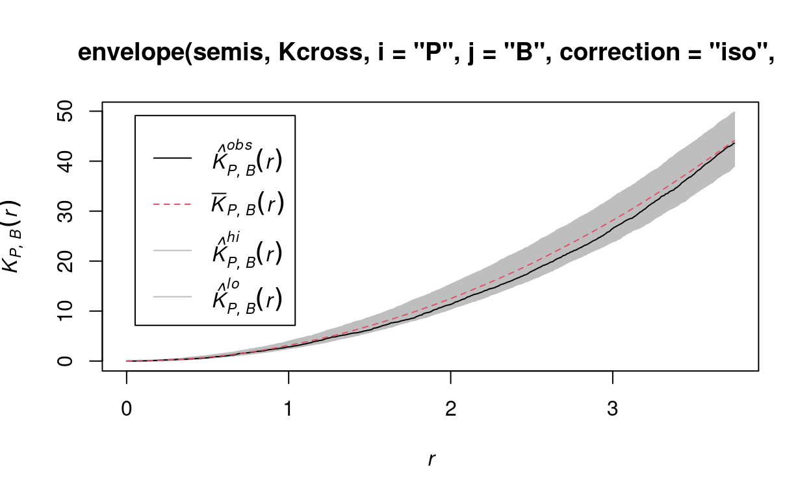
Ici, la courbe observée se situe totalement dans l’enveloppe, donc nous ne rejetons pas l’hypothèse nulle d’indépendance des deux patrons.
Questions
Quelle raison pourrait justifier ici notre choix d’effectuer la translation des points du bouleau plutôt que du peuplier?
Est-ce que les simulations générées par translation aléatoire constitueraient un bon modèle nul si les deux patrons étaient hétérogènes?
Patrons de points marqués
Le jeu de données fir.csv contient les coordonnées \((x, y)\) de 822 sapins dans une placette d’un hectare et leur statut (A = vivant, D = mort) suivant une épidémie de tordeuse des bourgeons de l’épinette.
x y status
1 31.50 1.00 A
2 85.25 30.75 D
3 83.50 38.50 A
4 84.00 37.75 A
5 83.00 33.25 A
6 33.25 0.25 Afir <- ppp(x = fir$x, y = fir$y, marks = as.factor(fir$status),
window = owin(xrange = c(0, 100), yrange = c(0, 100)))
plot(fir)
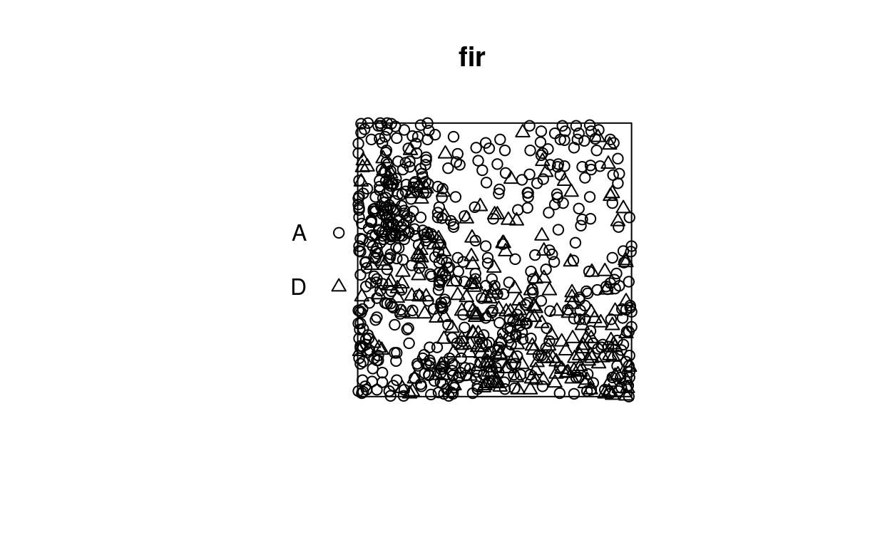
Supposons que nous voulons vérifier si la mortalité des sapins est indépendante ou corrélée entre arbres rapprochés. En quoi cette question diffère-t-elle de l’exemple précédent où nous voulions savoir si la position des points de deux espèces était indépendante?
Dans l’exemple précédent, l’indépendance ou l’interaction entre les espèces référait à la formation du patron lui-même (que des semis d’une espèce s’établissent ou non à proximité de ceux de l’autre espèce). Ici, la caractéristique qui nous intéresse (survie des sapins) est postérieure à l’établissement du patron, en supposant que tous ces arbres étaient vivants d’abord et que certains sont morts suite à l’épidémie. Donc nous prenons la position des arbres comme fixe et nous voulons savoir si la distribution des statuts (mort, vivant) entre ces arbres est aléatoire ou présente un patron spatial.
Dans le manuel de Wiegand et Moloney, la première situation (établissement de semis de deux espèces) est appelé patron bivarié, donc il s’agit vraiment de deux patrons qui interagissent, tandis que la deuxième est un seul patron avec une marque qualitative. Le package spatstat dans R ne fait pas de différences entre les deux au niveau de la définition du patron (les types de points sont toujours représentés par l’argument marks), mais les méthodes d’analyse appliquées aux deux questions diffèrent.
Dans le cas d’un patron avec une marque qualitative, nous pouvons définir une fonction de connexion de marques (mark connection function) \(p_{ij}(r)\). Pour deux points séparés par une distance \(r\), cette fonction donne la probabilité que le premier point porte la marque \(i\) et le deuxième la marque \(j\). Selon l’hypothèse nulle où les marques sont indépendantes, cette probabilité est égale au produit des proportions de chaque marque dans le patron entier, \(p_{ij}(r) = p_i p_j\) indépendamment de \(r\).
Dans spatstat, la fonction de connexion de marques est calculée avec la fonction markconnect, où il faut spécifier les marques \(i\) et \(j\) ainsi que le type de correction des effets de bord. Dans notre exemple, nous voyons que deux points rapprochés ont moins de chance d’avoir une statut différent (A et D) que prévu selon l’hypothèse de distribution aléatoire et indépendante des marques (ligne rouge pointillée).
plot(markconnect(fir, i = "A", j = "D", correction = "iso"))
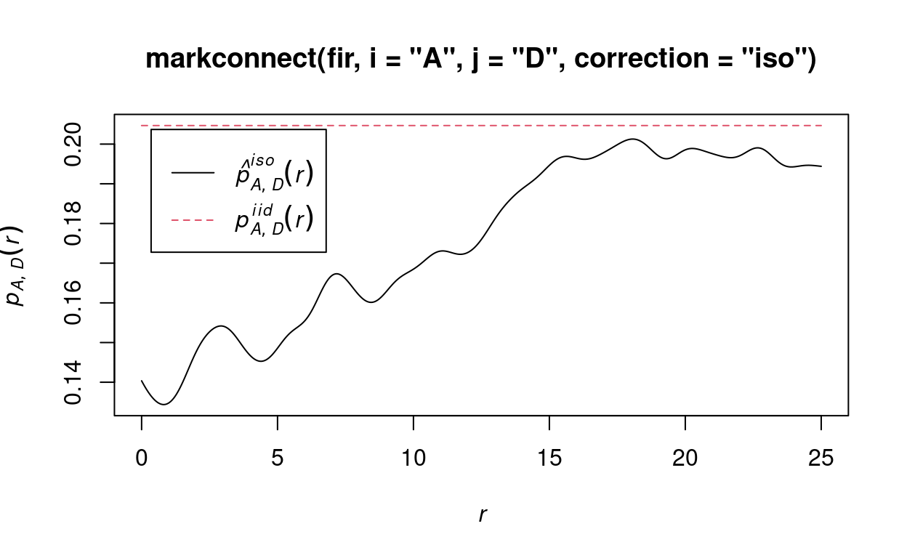
Dans ce graphique, les ondulations dans la fonction sont dues à l’erreur d’estimation d’une fonction continue de \(r\) à partir d’un nombre limité de paires de points discrètes.
Pour simuler le modèle nul dans ce cas-ci, nous utilisons la fonction rlabel qui réassigne aléatoirement les marques parmi les points du patron, en maintenant la position des points.
plot(envelope(fir, markconnect, i = "A", j = "D", correction = "iso",
nsim = 199, nrank = 5, simulate = rlabel))
Generating 199 simulations by evaluating function ...
1, 2, 3, 4.6.8.10.12.14.16.18.20.22.24.26.28.30.32.34.36
.38.40.42.44.46.48.50.52.54.56.58.60.62.64.66.68.70.72
.74.76.78.80.82.84.86.88.90.92.94.96.98.100.102.104.106.108
.110.112.114.116.118.120.122.124.126.128.130.132.134.136.138.140.142.144
.146.148.150.152.154.156.158.160.162.164.166.168.170.172.174.176.178.180
.182.184.186.188.190.192.194.196.198 199.
Done.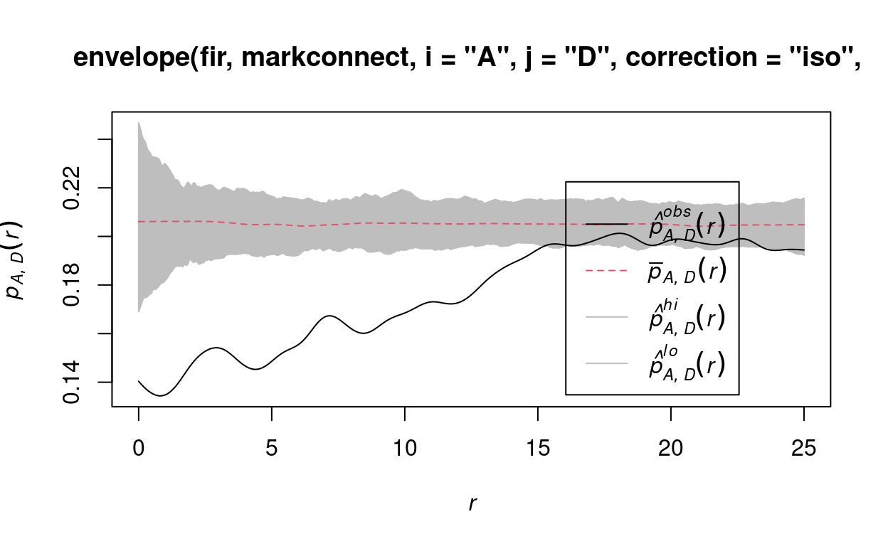
Notez que puisque la fonction rlabel a un seul argument obligatoire correspondant au patron de points original, il n’était pas nécessaire de spécifier au long: simulate = function(x) rlabel(x).
Voici les résultats pour les paires d’arbres du même statut A ou D:
par(mfrow = c(1, 2))
plot(envelope(fir, markconnect, i = "A", j = "A", correction = "iso",
nsim = 199, nrank = 5, simulate = rlabel))
Generating 199 simulations by evaluating function ...
1, 2, 3, 4.6.8.10.12.14.16.18.20.22.24.26.28.30.32.34.36
.38.40.42.44.46.48.50.52.54.56.58.60.62.64.66.68.70.72
.74.76.78.80.82.84.86.88.90.92.94.96.98.100.102.104.106.108
.110.112.114.116.118.120.122.124.126.128.130.132.134.136.138.140.142.144
.146.148.150.152.154.156.158.160.162.164.166.168.170.172.174.176.178.180
.182.184.186.188.190.192.194.196.198 199.
Done.plot(envelope(fir, markconnect, i = "D", j = "D", correction = "iso",
nsim = 199, nrank = 5, simulate = rlabel))
Generating 199 simulations by evaluating function ...
1, 2, 3, 4.6.8.10.12.14.16.18.20.22.24.26.28.30.32.34.36
.38.40.42.44.46.48.50.52.54.56.58.60.62.64.66.68.70.72
.74.76.78.80.82.84.86.88.90.92.94.96.98.100.102.104.106.108
.110.112.114.116.118.120.122.124.126.128.130.132.134.136.138.140.142.144
.146.148.150.152.154.156.158.160.162.164.166.168.170.172.174.176.178.180
.182.184.186.188.190.192.194.196.198 199.
Done.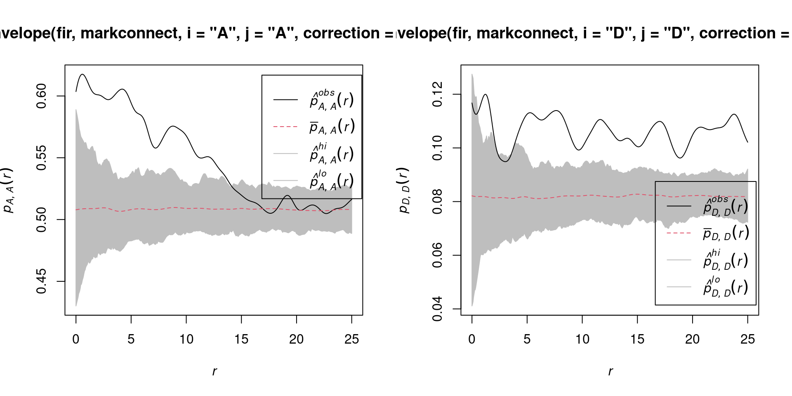
Il semble donc que la mortalité des sapins due à cette épidémie est agrégée spatialement, puisque les arbres situés à proximité l’un de l’autre ont une plus grande probabilité de partager le même statut que prévu par l’hypothèse nulle.
Références
Fortin, M.-J. et Dale, M.R.T. (2005) Spatial Analysis: A Guide for Ecologists. Cambridge University Press: Cambridge, UK.
Wiegand, T. et Moloney, K.A. (2013) Handbook of Spatial Point-Pattern Analysis in Ecology, CRC Press.
Le jeu de données du dernier exemple est tiré des données de la Forêt d’enseignement et de recherche du Lac Duparquet (FERLD), disponibles sur Dryad en suivant ce lien.
Solutions
Exercice 1
plot(envelope(semis_split[[2]], Kest, correction = "iso"))
Generating 99 simulations of CSR ...
1, 2, 3, 4, 5, 6, 7, 8, 9, 10, 11, 12, 13, 14, 15, 16, 17, 18, 19, 20, 21, 22, 23, 24, 25, 26, 27, 28, 29, 30, 31, 32, 33, 34, 35,
36, 37, 38, 39, 40, 41, 42, 43, 44, 45, 46, 47, 48, 49, 50, 51, 52, 53, 54, 55, 56, 57, 58, 59, 60, 61, 62, 63, 64, 65, 66, 67, 68, 69, 70,
71, 72, 73, 74, 75, 76, 77, 78, 79, 80, 81, 82, 83, 84, 85, 86, 87, 88, 89, 90, 91, 92, 93, 94, 95, 96, 97, 98, 99.
Done.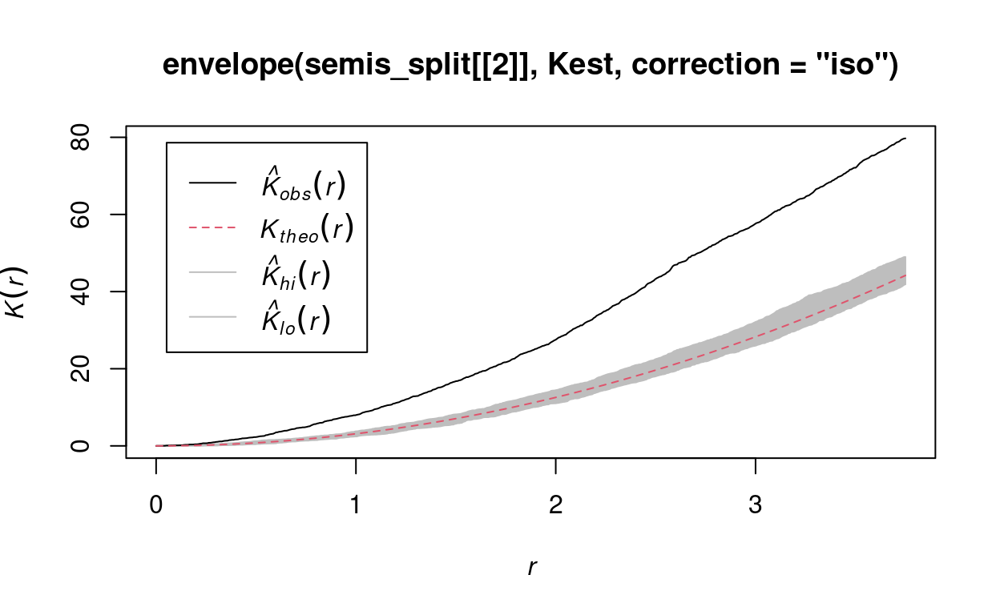
Les semis de peuplier semblent significativement agrégés selon la valeur du \(K\).
Exercice 2
khet_p <- envelope(semis_split[[2]], Kinhom, sigma = 5, correction = "iso",
nsim = 199, nrank = 5, simulate = function(x) rpoispp(dens_p))
Generating 199 simulations by evaluating function ...
1, 2, 3, 4.6.8.10.12.14.16.18.20.22.24.26.28.30.32.34.36
.38.40.42.44.46.48.50.52.54.56.58.60.62.64.66.68.70.72
.74.76.78.80.82.84.86.88.90.92.94.96.98.100.102.104.106.108
.110.112.114.116.118.120.122.124.126.128.130.132.134.136.138.140.142.144
.146.148.150.152.154.156.158.160.162.164.166.168.170.172.174.176.178.180
.182.184.186.188.190.192.194.196.198 199.
Done.plot(khet_p)
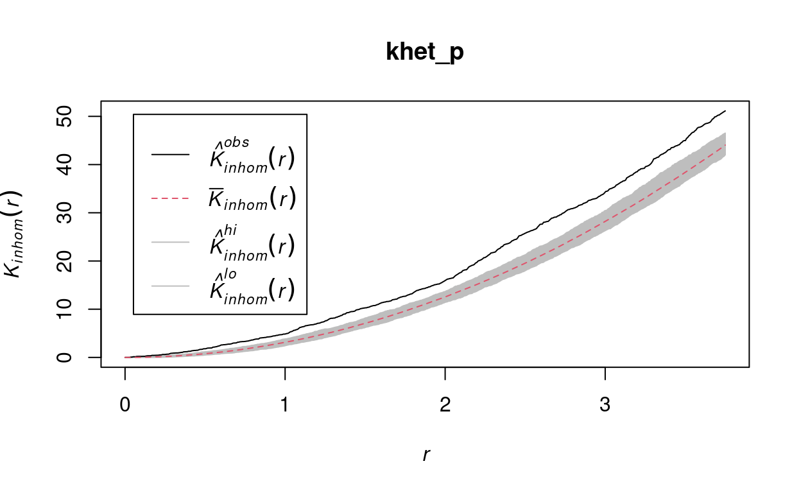
Ici, puisque nous estimons la variation de densité à une plus grande échelle, même après avoir tenu compte de cette variation, les semis de peuplier semblent agrégés à petite échelle.